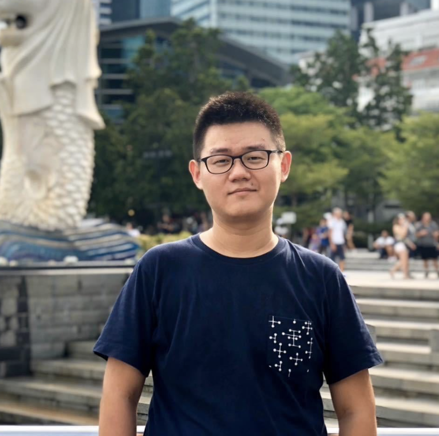

|

|
Hanshu Yan, Ph.D.
Research Scientist@ByteDance/TikTok, Singapore;
We are looking for talented research interns working on deep generative models and representation learning.
person e-mail: hanshu.yan (at) u.nus.edu; hanshu.yan (at) bytedance.com
[Scholar]
[Linkedin]
|
About Me
Hi! I am working as a Research Scientist at ByteDance Singapore towards efficient and controllable diffusion-based generative models. Previously, I did my Ph.D. with Prof. Vincent Y. F. Tan and Dr. Jiashi Feng at NUS. I was also working closely with Dr. Jingfeng Zhang and Prof. Masashi Sugiyama from RIKEN-AIP. I received M. Sc (Electrical Engineering) from NUS, B.Eng (Electrical Engineering), and B. Sc (Applied Mathematics) from Beihang University (BUAA).
My research interests include machine learning (generative modeling, efficiency, and robustness) and computer vision (image/video generation, editing, and processing). My research vision aims to explore principled machine learning algorithms for solving challenging problems in science and engineering.
Research Topics
- Diffusion-based Generative Modeling
- Image/Video Generation, Editing and Processing
- Adversarially Robust Machine Learning
Academic Service
- Reviewer for ICML, ICLR, NeurIPS, CVPR, ACM Multimedia
Experiences
Research Scientist @ ByteDance Inc., 07/2022 - Present
Research Intern @ Sea AI Lab, 03/2021 - 09/2021
Teaching Assistant @ NUS, 08/2018 - 12/2021
- EE5137, Stochastic Processes,
- EE5904, Neural Networks,
- EE4704, Introduction to Computer Vision and Image Processing,
- CG2023, Signals and Systems.
Reserach Engineer @ NUS, 07/2017 - 07/2018
Publications & Preprints
Topics:
Adversarial Robustness*,
Learning and Optimization*,
Biomedical*,
Others*
-
* Towards Adversarially Robust Deep Image Denoising. IJCAI 2022
Hanshu Yan, Jingfeng Zhang, Jiashi Feng, Masashi Sugiyama, Vincent Y. F. Tan
-
* CIFS: Improving Adversarial Robustness of CNNs via Channel-wise Importance-based Feature Selection. ICML 2021
[Code]
[Poster]
Hanshu Yan, Jingfeng Zhang, Gang Niu, Jiashi Feng, Vincent Y. F. Tan, Masashi Sugiyama
-
* RAIN: Robust and Accurate Classification Networks with Randomization and Enhancement. arXiv 2020
[Code]
Jiawei Du, Hanshu Yan, Joey Tianyi Zhou, Rick Siow Mong Goh, Jiashi Feng
-
* On Robustness of Neural Ordinary Differential Equations. ICLR 2020 Spotlight
[Code]
Hanshu Yan, Jiawei Du, Vincent Y. F. Tan, Jiashi Feng
-
* Efficient Sharpness-aware Minimization for Improved Training of Neural Networks . ICLR 2022
[Code]
Jiawei Du, Hanshu Yan, Jiashi Feng, Joey Tianyi Zhou, Liangli Zhen, Rick Siow Mong Goh, Vincent Y. F. Tan
-
* Towards Understanding Why Lookahead Generalizes Better Than SGD and Beyond. NeurIPS 2021
Pan Zhou, Hanshu Yan, Xiaotong Yuan, Jiashi Feng, Shuicheng Yan
-
* Information-Theoretic Characterization of the Generalization Error for Iterative Semi- Supervised Learning. Journal of Machine Learning Research, 2022.
Haiyun He, Hanshu Yan, Vincent Y. F. Tan
-
* Deep learning-guided fiberoptic Raman spectroscopy enables real-time in vivo diagnosis and assessment of nasopharyngeal carcinoma. Analytical Chemistry 2021
Chi Shu, Hanshu Yan, Wei Zheng, Kan Lin, Anne James, Selvarajan, Sathiyamoorth, Chwee Ming Lim, Zhiwei Huang
-
* Enhancing in vivo nose cancer detection with rapid fiberoptic Raman and deep learning techniques. SPIE Photonics West 2019
Chi Shu, Hanshu Yan, Kan Lin, Chwee Ming Lim, Wei Zheng, Jiashi Feng, Zhiwei Huang
-
* Recovering the Unbiased Scene Graphs from the Biased Ones. ACM MM 2021
[Code]
Meng-Jiun Chiou, Henghui Ding, Hanshu Yan, Changhu Wang, Roger Zimmermann, Jiashi Feng
-
* Modeling Trajectories with Neural Ordinary Differential Equations. IJCAI 2021
Yuxuan Liang, Kun Ouyang, Hanshu Yan, Yiwei Wang, Zekun Tong and Roger Zimmermann
-
* Adversarial Domain Adaptation with Prototype-Based Normalized Output Conditioner. IEEE Transactions on Image Processing 2021
Dapeng Hu, Jian Liang, Qibin Hou, Hanshu Yan, Yunpeng Chen
-
* Unsupervised Image Noise Modeling with Self-Consistent GAN. arXiv 2019
Hanshu Yan, Vincent Y. F. Tan, Wenhan Yang, Jiashi Feng
Scholarships & Awards
- NUS Research Scholarship, 2018-2022
- Outstanding Graduating Student (B.Eng @ BUAA), 2015
Coursework
@ School
- EE5907 Pattern Recognition; EE4603 Biomedical Imaging Systems
- EE5904R Neural Networks; EE6934 Deep Learning
- EE5137 Stochastic Processes; EE5139 Information Theory
- EE5101R Linear Systems; EE5103R Computer Control Systems
- EE5702R Advanced Power System Analysis
@ Home
- NUS, MA3209 Metric space
- CMU, 36-705 Intermediate Statistics
- Stanford, CS224n Natural Language Processing with Deep Learning
[tmp!]
|